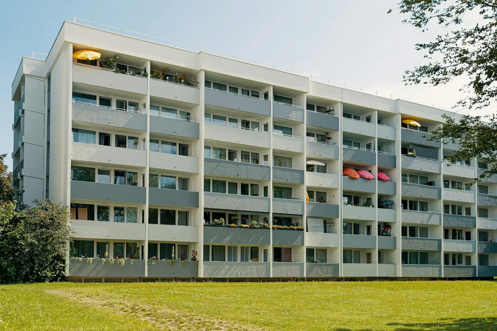
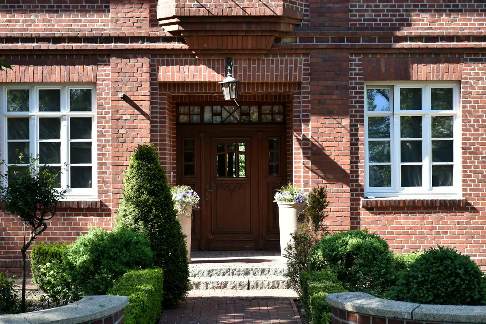

Energieausweise für Wohngebäude und Baudenkmale
Energieausweise informieren über die energetischen Eigenschaften eines Gebäudes und machen Gebäude näherungsweise vergleichbar. In vielen Fällen ist die Ausstellung gesetzliche Pflicht. Wir stellen Bedarfs- und Verbrauchsausweise aus, auch für denkmalgeschützte Wohngebäude.



Wann ein Energieausweis Pflicht ist
Wann und welche Art von Energieausweis Sie benötigen, regelt das Gebäudeenergiegesetz (GEG), in den Medien oft „Heizungsgesetz“ genannt. Bei Verkauf, Übertragung oder Teilungserklärung eines bestehenden Gebäudes und bei der Vermietung einer Wohnung ist ein Energieausweis vorzulegen, sofern nicht bereits ein gültiger vorliegt.
Für Neubauten ist ein Energiebedarfsausweis auf Basis der energetischen Eigenschaften des fertiggestellten Gebäudes auszustellen. Ein Verbrauchsausweis ist hier nicht zulässig, weil die Verbrauchsdaten der letzten drei Jahre fehlen.
Für Wohngebäude mit weniger als fünf Wohnungen, deren Bauantrag vor dem 1. November 1977 gestellt wurde, ist ebenfalls ein Bedarfsausweis nötig, außer das Gebäude erfüllte schon bei Fertigstellung (oder durch spätere Änderungen) das Anforderungsniveau der Wärmeschutzverordnung vom 11. August 1977. Dann darf auch ein Verbrauchsausweis ausgestellt werden.
Für Gebäude mit fünf oder mehr Wohneinheiten darf unabhängig von Baujahr und Sanierungszustand ein Verbrauchsausweis auf Basis der letzten drei Abrechnungsperioden erstellt werden.
Welcher Ausweis passt zu Ihrem Gebäude?
Beantworten Sie vier Fragen. Der Pfad zeichnet sich mit jeder Antwort weiter.
Handelt es sich um einen Neubau?
Steht das Gebäude unter Denkmalschutz?
Hat das Gebäude fünf oder mehr Wohnungen?
Wurde der Bauantrag vor dem 1. November 1977 gestellt, ohne dass das Haus die Wärmeschutzverordnung von 1977 erfüllt?
Neu: Energieausweise für Baudenkmale
Bisher musste bei Vermietung, Verpachtung und Verkauf denkmalgeschützter Wohngebäude kein Energieausweis vorgelegt werden. Mit dem neuen Gebäudemodernisierungsgesetz (GModG) wird die Ausweispflicht auch für denkmalgeschützte Gebäude eingeführt (Stand: Kabinettsbeschluss vom 13. Mai 2026).
Der Ausweis kann als Verbrauchs- oder Bedarfsausweis erstellt werden. Wir stellen schon jetzt Energieausweise für denkmalgeschützte Wohngebäude aus, für Vermietung und Verkauf ebenso wie nach einer Sanierung oder einem Umbau.
Ratgeber: Was das GModG ändertSo läuft es
Sie nennen uns Adresse, Baujahr, Wohneinheiten und den Anlass (Verkauf, Vermietung, Sanierung).
Für den Verbrauchsausweis genügen die Abrechnungen der letzten drei Jahre. Für den Bedarfsausweis nehmen wir das Gebäude vor Ort auf.
Sie erhalten den registrierten Energieausweis mit Registriernummer, gültig zehn Jahre.
Energieausweis anfragen
Nennen Sie uns Baujahr, Zahl der Wohnungen und den Anlass. Wir sagen Ihnen, welcher Ausweis nötig ist.